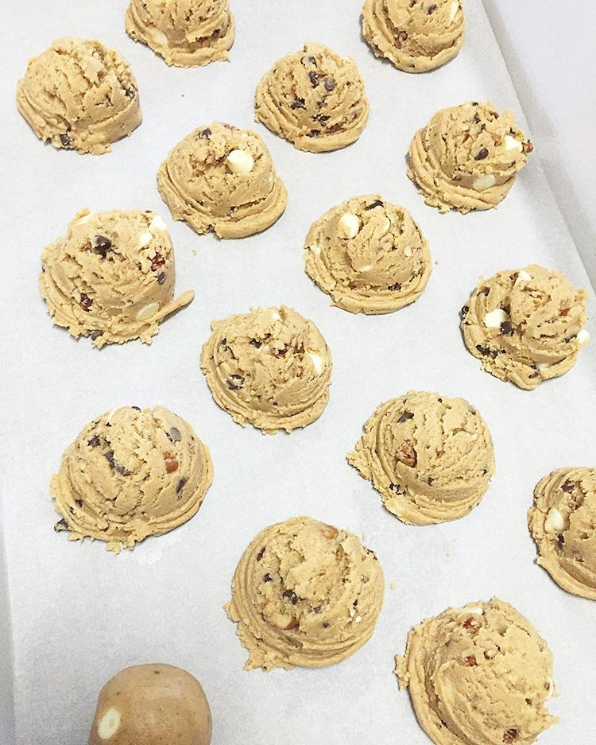
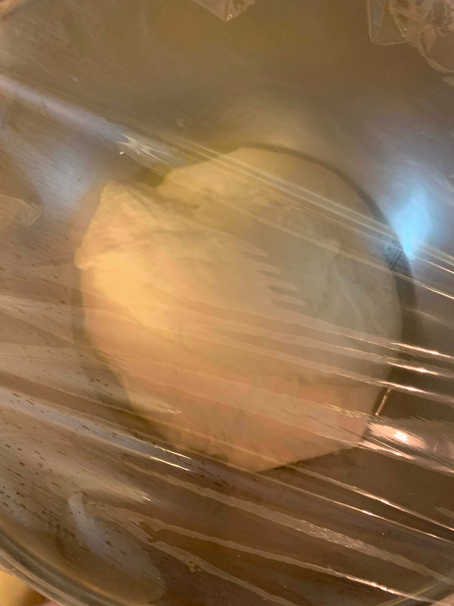

So... I like baking a lot.

To me, baking is like a puzzle.

because you have to get the size and proportions correctly, or else it won't fit.
To me, baking is also like chemistry or alchemy.
You add components together and add heat and pressure to transform the matter.
End results are sharing and showing it off.
I wouldn't say I'm an expert, as there are so many different things to bake in the world.

I know I certainly wouldn't be able to compete.
But here are somethings I've baked before...

cookies

cheesecake
pies


scones

french macarons

cakes
I recently also got into bread-baking.
But I'm still learning!
Lastly, I would like you to meet my baking buddy.
Her name is Bori.